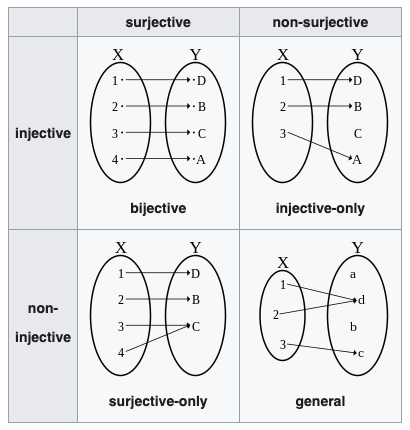
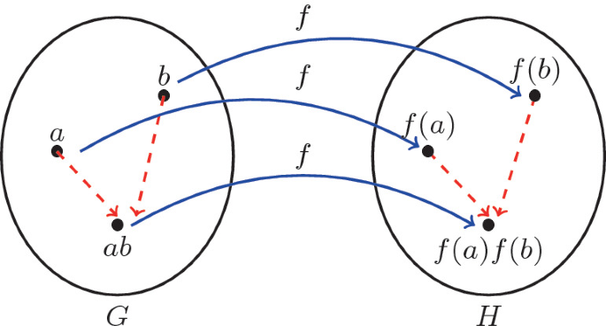
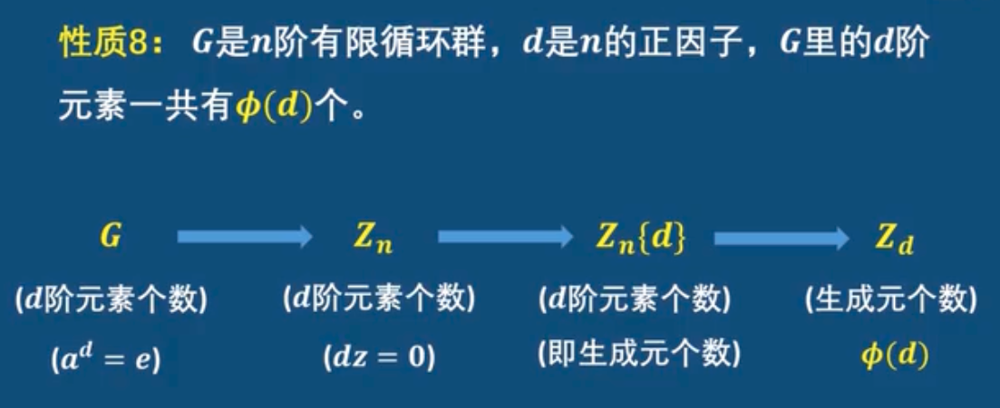

群论
群论是抽象代数的一个分支，主要研究一个被称为【群】的代数结构。
一个群 = 一个集合 + 一个二元运算。集合由一堆元素构成（比如 数字集合， 点集合， 符号集合）， 二元运算结合任意两个元素 a 和 b 形成了一个属于集合的元素。一个群应该满足下面4个属性:
- closure： 封闭性，二元运算的结果还是属于集合。
- associativity: 结合律, 举个例子： \( (a * b) * c = a * (b * c) \)
- identity element: 单位元，单位元跟二元运算有关，比如加法的单位元为0，乘法的单位元为1，\( a * e = e * a= a \).
- inverse: 逆元，\( a * a^{-1} = a^{-1} * a = e \)
如果除了上面4个条件之外，群还满足交换律，则群为交换群(commutative group)，又叫做阿贝尔群(Abelian group) .
举个例子： 椭圆曲线上面的【点集】和 【点的加法】 就构成了一个群。 两个点相加得到的点依然在椭圆曲线上，满足封闭性。\( (P_1+P_2)+P_3 = P_1 + (P_2+P_3) \) 满足结合律。 椭圆曲线的单位元是无穷远点，任何点和无穷远点相加，结果等于自身。椭圆曲线的逆元是一个点关于 x 轴对称的点，一个点和该点的逆元相加，结果等于无穷远点。
群的阶和集合元素的阶
群的阶就是集合中元素的个数。
集合元素的阶就是由元素反复进行二元运算生成的子集合的阶。如果二元运算是乘法，那么元素 a 的阶就是使得 \( a^m=e \) 成立的最小正整数 m 。
群的性质
- (消去律) \(a * b= a * c \Rightarrow b=c \)
- 方程 \( a * x =b \) 有唯一解， \( x \in G \)
- \( (a * b)^{-1}= b^{-1} * a^{-1} \)
- \( (a^{-1})^{-1} = a \)
判断子群
定理：H是G的非空子集，对于任意 \( a,b \in H \), 都有 \( a* b^{-1} \in H \), 则 H 是 G 的子群。
Proof:
- 先证单位元: 当 a=b 时，有 \( a * a^{-1} = e \in H \), 并且 \( a*e=e*a=a \),所以G的单元e属于集合H,并且e同时也是H的单位元。
- 再证逆元，我们需要证明任意一个\( a \in H \),它的逆元 \( a^{-1} \in H \), 这里使用\( e*a^{-1}=a^{-1} \in H \).故而 \( a^{-1} \) 不仅是a在G中的逆元，同时也是a在H中的逆元。
- 证明封闭性，封闭性需要证明\( a*b \in H \), 因为\( b^{-1} \in H \), 有 \( a*b=a*(b^{-1})^{-1} \in H \)
- 结合律：因为G是个群，它的子集的元素也必然满足结合律。
定理2: H是群G的非空子集，如果H是有限集，而且G的运算\( * \)在H上满足封闭性，则H是G的子群。
陪集(coset)
子群H是群G都子群，H可以用来把G分解成多个元素个数相等且互不相交的子集，这些子集被称为陪集。
若 \( a \in G \), 则
\[ aH :=\{a*h | h\in H\} \]
称为 H 关于 a 在 G 中的左陪集 (left cosets),同理，
\[ Ha :=\{ h*a | h\in H \} \]
称为 H 关于 a 在 G 中的右陪集(right cosets).
陪集的生成过程就是在群G中任意选一个元素a,将a与子群H的元素分别进行二元运算，得到的集合就是H关于a在G中的陪集。其中 a 叫做代表元(representative). 陪集的符号一般表示为 \([a]_H\).
陪集的性质：
- \(a \in [a]_H\), 代表元一定是陪集的元素，因为子集一定包含单位元，\(e*a=a*e=a\)
- \( [e]_H=H \), 代表元为单位元时，陪集和子集相等。
- \( a\in H \Longleftrightarrow [a]_H=H \), 代表元是子集的元素时，生成的陪集和子集相等。
证明： \(a \in H \), a 和 H 的元素进行二元运算时，由于H具有封闭性，二元运算的结果一定含于H,即 \( [a]_H \subseteq H \);
另一方面：\( \forall b \in H , a\in H \)
\( a^{-1}* b \in H \), 将\( a^{-1}*b \)看做一个整体，与 a 进行二元运算
\( a*(a^{-1}*b) \in [a]_H \Rightarrow b\in [a]_H \Rightarrow H \subseteq [a]_H \Rightarrow [a]_H=H \) - \( [a]_H =[b]_H \Leftrightarrow a^{-1}*b \in H (或 b^{-1}*a \in H ) \)
证明： \( H=\{ e, \cdots, h, \cdots \} \)
\( [a]_H=\{ a,\cdots,a*h,\cdots \} \)
\( [b]_H=\{b,\cdots,b*h,\cdots\} \)
因为H关于a的陪集等于H关于b的陪集，所以 b 必定等于 a 与 H 中某个元素进行二元运算，即
\( b=a*h \Rightarrow a^{-1}*b=h \)
又因为 h 是 H 中的元素
所以 \( a^{-1}*b \in H \)
拉格朗日定理(Lagrange's theorem)
定理： G 是有限群， H是G的任意子群，则 \[ ord(H) | ord(G) \]
证明：因为H的所有陪集\( [a_1]_H,[a_2]_H,\cdots,[a_n]_H \)其实是对G的划分，且每个陪集的元素个数相等(等于子集的阶),所以\( |G|=k|H| \), 其中k表示通过H生成的陪集的个数。
举个例子： 群 \( Z_6= \{0,1,2,3,4,5\} \)
子群 \( 3Z_6=3\times \{0,1,2,3,4,5\}=\{0,3\} \)
陪集:
正规子群(normal subgroup)和商群(quotient group)
定义：设N是群G的子群，如果对于 ,都有 ,称N为G的正规子群。
给定一个正规子群N,搭配上群G的元素，就可以构造出一些陪集，这些陪集集中起来，就形成了一个集合，这个集合表示如下： 这个集合的元素是陪集，给这个集合搭配上如下的二元运算： 就构成了商群，称为群G在模N下的商群。
商群的研究范围： 商群的元素是一堆陪集，这些陪集里面除了N(平凡陪集)以外，其他的陪集的元素都不属于正规子群，故而，商群的研究范围主要就是正规子群之外的那些元素。
商群的阶：
商群的性质在阿贝尔群下的表现： 阿贝尔群的子群都是正规子群(通过交互律可证)，阿贝尔群的任意子群都可以构造商群，阿贝尔群的子群构造的商群也是阿贝尔群。
陪集和剩余类等价： 在整数群里，陪集和剩余类本质上是一个东西，都是等价关系下的等价类。
数学映射的定义

群同态(group homomorphism)

定义:
设群 和群 , 如果函数 对于 , 都有
则称 f 为 到 的群同态。
群同态的作用：
根据定义可知，群同态在元素映射以后，元素之间的运算规律仍然得到了保持。有的群比较容易分析，比如常见的整数模n加法群，有的群分析起来就不太方便，这时候就可以利用群同态的特效通过简单群来分析麻烦群。另外一个用途就是用于同态加密计算，只要映射函数不可逆，就可以把一个群的二元运算映射到同态群上面计算，达到加密计算的效果。
同态像(homomorphic image):
G中的元素经过f映射到G'后，得到的可能只是G'的子集，也就是说，G'中的某些元素，在G中可能找不到原像。因此，就有了同态像的概念，又称为像，像指的是G'中能找到原像的那些元素构成的子集(f的同态像)。表示为
同态核(homomorphic kernel):
G中的元素经过f映射后等于G'的单位元的元素构成同态核，表示为
阿贝尔群的m次方映射(m-power mape):
G是阿贝尔群
群同态的性质
- , (e和e'分别为群G和G'的单位元), 单位元映射后仍然是单位元
证明： - , 互为逆元的元素的像依然互为逆元。
证明： - H是G的子群，则 f(H) 是 G'的子群，子群的像依然是子群。
证明：, 则
- 如果像是映射群的子群，那么原像就是就是G的子群。同态核是G的子群，同态像是G'的子群。
-
证明： - 同态核是正规子群。
证明：要证明同态核是正规子集，只需要证明它的左右陪集相等。
, 有
, 有
令, 因为 rhs 属于同态核，只需要证明 lhs 属于同态核即可，则只需要证明 lhs 经过映射后等于e'。
群同构(group isomorphism)
如果一个群同态是个双射函数，那它就叫群同构。G与G'同构，记为. 同构的群，它们本质上就是同一个群，因为它们拥有相同的性质，比如G的生成元对于的像也是G'的生成元。
第一同构定理(first isomorphism theorem): 第一同构定理又叫【基本同态定理】(FHT,fundamental homomorphism theorem).
定理： 设群 和群, 是群同态(同态核是 Ker f, 同态像 Im f), 则 同态核构造的商群 和同态像同构, 这个群同构就是把商群里面的陪集映射成代表元的像，代表元的像和具体的f相关。
循环群
- 任意无限循环群都只有2个生成元
- 任意循环群都是阿贝尔群
证明： , 设 , 则
- 有限循环群都阶是n,则生成元g的阶也是n
- 正整数 d|n, n阶有限循环群恰有唯一的d阶子群。
证明：（存在性）d|n, 元素 阶为d,因为使得 成立的最小的x为d.
则子群 的阶是d, 故而存在阶为d的子群 .
(唯一性)反证法。 假设存在另一个d阶的循环子群, 则 , 也就是说 k 是 的倍数，那么 就可以由 生成，所以 , 有 是 的子群，因为二者的阶都为d,所以两个群是同一个循环群。
举个例子： 循环群G的阶是15，15的正因子为 1，3，5，15，所以，G一共有4个子群，它们的阶分别为 1，3，5，15.
- n阶有限循环群 ,有 的阶是
证明: 假设 的阶为m, 则 ,
则 km 既是 k 的倍数，同时也是 n 的倍数， 有
所以 - 当 时， 就是循环群的生成元。与 n 互素的 k 一共有 个，即生成元的个数。当已知一个生成元g时，求出所有与n互素的k,那么 就是所有的生成元。
- 素数阶的群必然是(有限)循环群。
证明：设G是群，且 , p是素数。
设 , a的阶是k( )
则 , 因为p是素数，所以k要么等于1，要么等于p，由因为 , 所以 k=p.
也就是说 a 的阶为p, a就是群G都生成元，所以G是（有限）循环群。
该定理可以归纳概括为：素数阶的群一定是循环群，它的生成元是任一非单位元。 这个定理在密码中经常用来构造循环群。
举个例子:
取 a=2, 则有循环子群为 , 即 ，这里的指数是加法模5的一种模拟表示方法。
利用同构举一反三:
同构的群本质上就是同一个群，它们的结构性质完全一样。
- 无限循环群：同构于
- n阶有限循环群：同构于
证明： 设无限循环群为 , 中任一元素为 , 映射函数 .
所以这个映射是一个群同态，而且同态像里面的每一个 都有原像 z, 所以这个映射是一个满同态。
根据同态核为两种情况证明单射：
- 如果同态核只包含单位元 0 即 , 那么 , 映射是一个单射。即是满射又是单射，所以映射是一个群同构，因为是 Z 和循环群 同构，可见这个循环群是个无限群。这就说明，任何无限循环群都同构于Z,它们都是同一个东西，Z的所有性质都可以用于无限循环群。
- 如果同态核除了单位元0还包含其他元素，因为Z的子群都满足格式 , 而同态核也是Z的子群，则有 ， 根据第一同构定理，可以利用群同态构造一个群同构，, 又因为 是个有限群，所以循环群也是一个有限群， 有n个元素，循环群也就有n个元素。也就是说，任何n阶有限循环群都同构于 .
- G是n阶有限循环群，d是n的正因子，G里的d 阶元素一共有 个。
证明： 因为 , 设 , 求G的d阶元素个数，就是求当 时，满足条件的a的个数。
也就是求 中， 当 时，满足条件的z的个数， 也就是求子群 中的d阶元素的个数(也是这个循环群的生成元的个数)，又因为 是个d阶有限循环群，所有它与 同构，所以问题就等价于求 的生成元的个数，而 个生成元。

的性质
是乘法群.
乘法阶(multiplicative order):
定义： , 设k是满足
的最小正整数，称k是a在模n下的乘法阶，记为 , 其实这里的k同时也是元素a的阶。
原根(primitive root):
定义： , 如果 ， 则称g是模n下的原根。
则
原根存在的条件:
设 p 是奇素数，e是正整数
时，模n下存在原根。
RSA中 ,p,q是不相等的素数，所以RSA的模数下就不存在原根。
存在原根的 是循环群： 如果模n下存在原根，原根的阶是 ， 而 的阶也是 , 所以原根g就是 的生成元，此时， 就是循环群。 明显 就是一个循环群。
如何找原根(生成元)
根据拉格朗日定理，子群的阶整除原群的阶。 则有
a是原根
对 做素因子分解有：
当a不是原根时，假设a的阶为 , 根据拉格朗日定理有 ,
上面的推导时因为 d 是 的因子，且 ，那d就一定等于 的唯一质数分解式子中的某些素数的某些指数次的组合。
因为a的阶为d,则有
所以
故而，找 原根的算法如下：
- 唯一质数分解
- 任意选择一个 , 即任意选择一个与n互质的数
- if
else goto 2
举个例子：
求 的所有生成元。
任意选择与19互质的数2, 计算
所以 2 是 的一个生成元。
由于在循环群 中, 群的阶为n，如果已知一个生成元为g, 当 gcd(k,n)=1 时，的阶为 , 则 g^k 也是群 的生成元, 与 同构，直接套用 的性质来求解所有的生成元。
的阶为， 与18互质的数有 , 则
也就是说 都是 的生成元。
验证一下：
离散对数的性质
-
证明： 令 , 则
在循环群中生成元生成的元素相等，说明x和r之间的距离正好差了一个循环(生成元的阶 )，也就是说x,r在循环下同余
- 根据上面的性质可以联想到 , 因为生成元进行指数次运算，这些指数如果在生成元的阶下同余的话，得到的结果是相等的。
设 gcd(b,n)=1, ， m是正整数，h也是原根:
-
证明:
-
proof:
-
proof:
设
Carmichael funtion 推导的结论
Carmichael function 表示为 , n的唯一质因子分解为
则 .
Carmichael funtion在 的结论：
的阶是 , 的元素的最大阶为 .
置换
一个有限集合 S 到自身的双射称为 S 的一个置换，集合 \( S={a_1,a_2,\cdots,a_n} \)上的置换可以表示为 \[ f=\begin{pmatrix} a_1,a_2,\cdots,a_n \\ a_{p_1},a{p_2},\cdots,a{p_n} \end{pmatrix} \] 意为将 \( a_i \)映射为 \( a_{p_i} \), 其中 \( p_1,p_2,\cdots,p_n \) 是 \( 1,2,\cdots,n \)的一个排列。显然 S 上的所有置换的数量为 n!。
所以置换的本质就是一个双射函数。
对称群 (symmetric group) 和 置换群 (permutation group)
给定一个集合 M, 集合M的所有可逆置换构成集合 N, N 关于可逆置换的复合（函数的复合也可以看作是两个函数间的二元运算）满足封闭性，结合律，有单位元 (恒等置换，即每个元素映射到它自己)，有逆元 (交换置换表示中的上下两行)，因此构成一个群，称为 M 的对称群，记为\( Sym(M) \).
\( Sym(M) \)的任一子群称为 M 的置换群。
如果 M 是包含 n 个元素的有限集， 称其到自身的可逆映射为 n阶置换 (permutation)， 其对称群称为 n阶对称群(sysmmetric group of degree n).
举个例子： 假设我们有集合 M={1,2,3}, 所有的置换就是对集合M做全排列，结果如下：
\(
\begin{pmatrix}
1,2,3 \\
1,2,3
\end{pmatrix}
\begin{pmatrix}
1,2,3 \\
2,1,3
\end{pmatrix}
\begin{pmatrix}
1,2,3 \\
3,1,2
\end{pmatrix}
\begin{pmatrix}
1,2,3 \\
1,3,2
\end{pmatrix}
\begin{pmatrix}
1,2,3 \\
2,3,1
\end{pmatrix}
\begin{pmatrix}
1,2,3 \\
3,2,1
\end{pmatrix}
\)
以上这六个置换就是就是对称群的元素集合，集合的运算就是对映射函数进行复合操作，单位元就是第一个元素（恒等置换），逆元就是把每一个置换表达中的上下两行交换得到的新的映射函数，而且每次进行复合操作得到的映射函数都是上面的置换之一，且复合函数满足结合律。